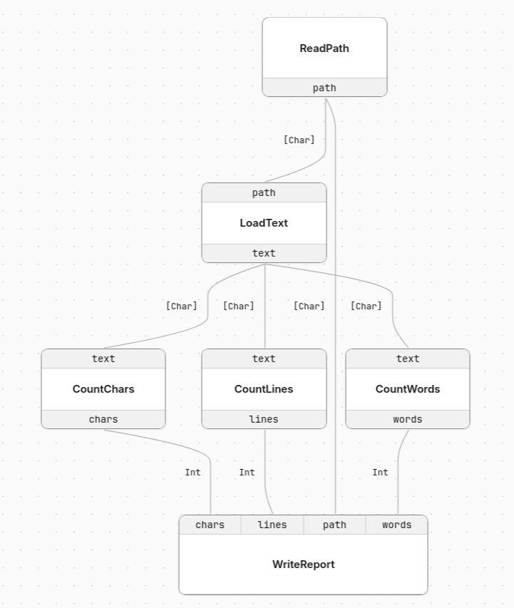
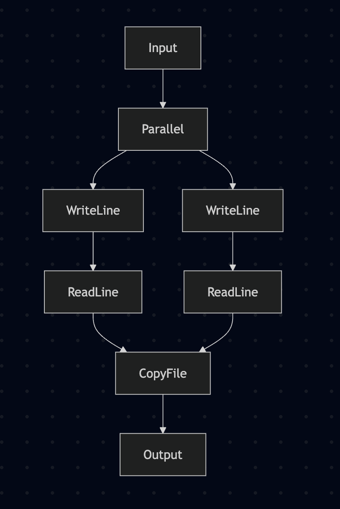
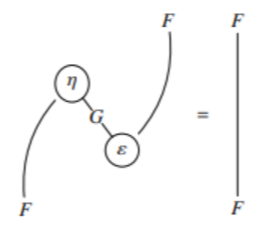

Why cartesian categories?
The main bottleneck in programming is not in code production, but in code understanding. This became even more pronounced with the monumental quantities of code AI is capable of producing. This means we desperately need tools that help us manage this uncontrolled growth.
Aiming for correct and intelligible code is not new, and most software engineering patterns have this exact goal. In the context of Haskell, we have a wealth of patterns, effect libraries, etc. The question is which ones are also well adapted to this new reality.
The approach I want to take here is to use effects that allow a graphical representation of code. That is, tools that allow us to look at code in a way that is equivalent to the code that is written.
In short, WireCat is a GHC plugin, a library, and a visualization tool based on cartesian categories and extensible records that allows us to write code like this:
wordCount :: WordCount :> cat => cat Empty Empty
wordCount = proc R {} -> do
R {path} <- readPath -< R {}
R {text} <- loadText -< R {path}
R {words} <- countWords -< R {text}
R {lines} <- countLines -< R {text}
R {chars} <- countChars -< R {text}
writeReport -< R {path, words, lines, chars}That can be interpreted in IO, or rendered like this:

The operations become nodes, and the fields in the records become named ports. The same definition can be run with a concrete interpreter, captured as a free categorical term, or exported as DOT, SVG, and JSON for the viewer.
The motivation for this series of posts was Chris Penner’s post on using Arrows to sequence effects, which I highly recommend. However, the solution I propose here is not arrows, but instead the closely related cartesian categories. The code for the plugin was heavily based on overloaded by Oleg Grenrus.
The goal of this blog post is to explain why I think this is the right abstraction. In the following posts I will discuss further details like desugaring, dealing with cases (i.e. bicategories), how to use this as an effects library, etc.
WireCat is highly experimental code, and can change at any moment, which means that care is advised. At the moment the plugin covers the cartesian fragment: composition, projection, combination, relabeling, and primitive operations. Case analysis is still future work.
Ideas and collaborations are always welcome!
1 Code and graphs
Programs always have two layers – one is the structure of the code, and the other is its interpretation. We write code in text, which has syntax that gives structure to it, and when the code is run, we interpret it.
If we try to represent all code graphically, we can end up with something like Scratch, which exists, but is hard to manipulate at larger scales. The control flow of complex software can be very complicated, and its graphical representation is no less complicated. Any sufficiently detailed description of software will tend towards code itself.
However, in Haskell it’s very easy to define EDSLs that add an extra level to it. We have a data structure that itself is interpreted as Haskell code, which is then interpreted again. That is, we can define an intermediate language that we choose to represent graphically, and that has good properties. This intermediate language, however, will be non-exhaustive and have details left to interpretation.
2 Cartesian categories and string diagrams
In Chris’ post we can see the graphical representation of many programs:

These graphs are very similar to something in category theory: string diagrams. These diagrams give a very powerful equational language to reason about definitions and propositions. In mathematical texts they will look like this, with operations as nodes, and objects as wires:

So, if we can produce such images with arrows, why not use them? What makes the arrow diagrams not as powerful is arr. Indeed we can see this in the definition of CommandRecorder:
instance Arrow CommandRecorder where
arr _ = CommandRecorder []which means that when we translate to the visual language, we lose information.
The problem is that arr lets arbitrary Haskell functions enter the arrow. Once that happens, the graph can no longer faithfully represent the internal structure of the program; it can only record that some opaque Haskell computation happened there.
Cartesian categories don’t have this problem, as they are essentially Arrow without arr. This means we can recover the structure of the code directly from its graphical representation.
The price is that the set of programs we can write in this language is more restricted. And what we lose is essentially the possibility of having let blocks in the code.
So how can we manipulate values?
3 Manipulating and naming wires
The fundamental idea of a cartesian category is that there is a concept of product. Elements can be composed and decomposed via products. In the arrow typeclass, this can be seen for example in:
(&&&) :: a b c -> a b c' -> a b (c, c')However, manipulating tuples is messy. You have to deal with association laws saying that (a,(b,c)) is equivalent to ((a,b),c), and so on.
A more ergonomic solution is using row types. Essentially, instead of having nested products, we have records with named fields:
type Person =
Rec
( "name" .== String
.+ "age" .== Int
.+ "active" .== Bool
)
person :: Person
person =
#name .== "Alice"
.+ #age .== 42
.+ #active .== TrueBesides making the associativity/permutation problems go away, we now have names for attributes. That is what lets us have named ports in our wire diagrams.
4 Writing and interpreting a program
We start by describing the actions we support. In the compact syntax used by WireCat, that looks like this:
[effect|
WordCount
ReadPath :: {} -> { path :: FilePath }
LoadText :: { path :: FilePath } -> { text :: String }
CountWords :: { text :: String } -> { words :: Int }
CountLines :: { text :: String } -> { lines :: Int }
CountChars :: { text :: String } -> { chars :: Int }
WriteReport :: { path :: FilePath, words :: Int, lines :: Int, chars :: Int } -> {}
|]Every effect can be interpreted in its free cartesian category, which gives us an effect graph, and that’s how we generate the wire diagrams:
toGraph :: ToLabel op => Free op r s -> Graph (Rec r) (Rec s)Execution is given by an Interpret instance:
instance Interpret (KleisliRec IO) WordCount where
--
interpret ReadPath = KleisliRec $ \_ -> do
putStr "Path: "
p <- getLine
pure (#path .== p)
--
interpret LoadText = KleisliRec $ \r -> do
t <- readFile (r .! #path)
pure (#text .== t)
--
interpret CountWords = KleisliRec $ \r ->
pure (#words .== length (words (r .! #text)))
--
interpret CountLines = KleisliRec $ \r ->
pure (#lines .== length (lines (r .! #text)))
--
interpret CountChars = KleisliRec $ \r ->
pure (#chars .== length (r .! #text))
--
interpret WriteReport = KleisliRec $ \r -> do
putStr $
unlines
[ "path: " ++ r .! #path,
"words: " ++ show (r .! #words),
"lines: " ++ show (r .! #lines),
"chars: " ++ show (r .! #chars)
]
pure emptyAnd the actual code can be run with:
wordCountIO :: Empty -> IO Empty
wordCountIO = runKleisliRec wordCountRemember the quasiquoter from before? It exists because the effect definition is repetitive in its expanded form. Conceptually, for each action in WordCount a b, the first argument is the input for the action, and the second argument is the output:
data WordCount a b where
-- | Prompt for the input file path.
ReadPath ::
WordCount
(Rec Empty)
(Rec ("path" .== FilePath))
-- | Load the file contents from the path.
LoadText ::
WordCount
(Rec ("path" .== FilePath))
(Rec ("text" .== String))
-- | Count whitespace-delimited words in the text.
CountWords ::
WordCount
(Rec ("text" .== String))
(Rec ("words" .== Int))
-- | Count newline-delimited lines in the text.
CountLines ::
WordCount
(Rec ("text" .== String))
(Rec ("lines" .== Int))
-- | Count characters in the text.
CountChars ::
WordCount
(Rec ("text" .== String))
(Rec ("chars" .== Int))
-- | Write the word, line, and character counts for the file.
WriteReport ::
WordCount
(Rec ("path" .== FilePath .+ "words" .== Int .+ "lines" .== Int .+ "chars" .== Int))
(Rec Empty)The expanded form also needs some helpers to run these effects:
readPath :: (WordCount :> cat) => cat Empty ("path" .== FilePath)
readPath = interpret ReadPath
loadText :: (WordCount :> cat) => cat ("path" .== FilePath) ("text" .== String)
loadText = interpret LoadText
countWords :: (WordCount :> cat) => cat ("text" .== String) ("words" .== Int)
countWords = interpret CountWords
countLines :: (WordCount :> cat) => cat ("text" .== String) ("lines" .== Int)
countLines = interpret CountLines
countChars :: (WordCount :> cat) => cat ("text" .== String) ("chars" .== Int)
countChars = interpret CountChars
writeReport ::
(WordCount :> cat) =>
cat
("path" .== FilePath .+ "words" .== Int .+ "lines" .== Int .+ "chars" .== Int)
Empty
writeReport = interpret WriteReportHere we find the notation :>, which means that we can interpret an effect in a cartesian category.
This is the boilerplate that the quasiquoter replaces.
5 Conclusion
The interesting part, to me, is that the program has a real executable interpretation and a real graphical interpretation, without making the diagram a lossy trace.
This opens several possible directions. For example, it should be possible to have a purely graphical code editor for it – it’s just a graph manipulation tool. This allows a clear separation between specification and implementation at different levels. For example, defining the graph and letting an LLM write the implementation.
At the same time, the best way to organize, compose and layer code is not obvious. And this is one of the questions I want to tackle in the next posts.